ASOCIATIA NATIONALA A SALVATORILOR MONTANI DIN ROMANIA
PROCEDURI ȘI TEHNICI DE BAZĂ ÎN SALVAREA MONTANĂ
Poziţia de prindere şi folosire a pioletului se numeşte „priză piolet”. „Prizele piolet” pot fi:
1. Priză piolet BASTON,
2. Priză piolet ANCORĂ – cu două variante,
3. Priză piolet SPRIJIN,
4. Priză piolet ALARMĂ.
1. Priză piolet ANCORĂ
Acest tip de priză are două variante, în funcţie de înclinaţia pantei pe care se face deplasarea.
Pentru pante cu înclinaţia de până la 55°:
- Pioletul se prinde cu ambele mâini de partea superioară iar bucla de siguranţă va fi trecută peste încheietura mâini care prinde lopăţica pioletului (fig.116).
Pentru pante cu înclinaţia mai mare de 55°:
- Pioletul se prinde cu una dintre mâini, având ciocul metalic îndreptat spre sol. Bucla de asigurare se trece peste încheietura mâinii respective. Cu cealaltă mână se prinde pioletul la circa 10 – 15 cm. de vârful cozii (fig.117).
1. Priză piolet SPRIJIN
Priza piolet SPRIJIN se foloseşte foarte mult la traversări de pante cu înclinaţii mai mari de 40°. În acest caz, cu o mână se prinde pioletul de partea superioară, cu lopăţica în palmă, asigurarea va fi trecută peste încheietura mâinii respective iar cu cealaltă mână se prinde pioletul la circa 10 – 15 cm. de vârful cozii (fig.118).
Tot această priză se foloseşte şi la coborârea unor pante mai mari de 40°. În acest caz, o mână va prinde lopăţica de la mijloc iar cealaltă va prinde coada la circa 10 – 15 cm. de la vârful ei (fig.119).
În ambele cazuri, vârful cozii va fi îndreptat înspre sol.
1. Priză piolet ALARMĂ
Această priză a pioletului se foloseşte la deplasări pe pante foarte înclinate (în general la coborâre) şi ne ajută la oprire în cazul unei alunecări nedorite. Prinderea pioletului se va face ca la priza piolet ANCORĂ, cazul 2 (fig.120).
9.1.2. Călcarea zăpezii
Tehnica de călcare a zăpezii este foarte importantă la deplasările pe pante cu zăpadă, însuşirea acesteia ajutând la înaintare atât din punct de vedere fizic cât şi privind securitatea deplasării salvatorului montan. Călcarea zăpezii este diferită în funcţie de sensul deplasării. Astfel avem:
1. Călcarea zăpezii în urcare,
2. Călcarea zăpezii în traverseu
3. Călcarea zăpezii în coborâre,
4. Oprirea din alunecare.
5. Tehnica săpării urmelor în pante cu zăpadă îngheţată.
1. Călcarea zăpezii în urcare
- Distanţa laterală între picioare va fi egală cu lăţimea bazinului.
- La păşire, vârful bocancului va fi îndreptat în jos, presiunea exercitată în urmă fiind de sus în jos, pe ¾ din talpa bocancului.
- Unghiul format între pantă şi urma bocancului va fi conform figurii 121.
- Lungimea pasului trebuie aleasă în aşa fel încât să nu ne obosească în deplasare. Dacă se merge în echipă, cel care „taie urme” trebuie să ţină seama la alegerea pasului, de toţi membri echipei. Dacă pasul se afundă prea tare în zăpadă, se ia zăpadă cu lateralul bocancului, din laterala urmei şi se presează în urma adâncă. Pentru ca efortul coechipierilor să fie cât mai mic, se recomandă ca cel de-al doilea coechipier să mai consolideze urma. În deplasare, toţi membri vor călca obligatoriu pe aceiaşi urmă. Urma va arăta ca două linii paralele (fig.122).
2. Călcarea zăpezii în traverseu
După înclinaţia pantei, există două procedee:
- Pentru pante cu înclinaţie de până la 40° – 45°, se foloseşte tehnica „pasului încrucişat”. La acest procedeu, primul pas va fi executat cu piciorul din amonte (vârful bocancului se introduce în panta cu zăpadă oblic pe direcţia de înaintare – fig.123). După fixarea acestuia, se păşeşte cu piciorul din aval, înfigând călcâiul acestuia în pantă (fig.124).
3. Călcarea zăpezii în coborâre
Aceasta se poate face prin două procedee:
a) Prin păşire.
b) Tobogan.
a) Călcarea zăpezii la coborârea unei pante prin păşire, poate fi executată în două moduri:
· Păşire cu faţa spre aval (fig.126);
Se foloseşte la coborârea unor pante cu înclinaţia de până la 45°. Distanţa laterală dintre bocanci va fi de o lăţime de bazin. Se introduce tocul pantofului lăsându-se întreaga greutate a corpului în urma făcută. În cazul în care stratul de zăpadă este dur, se va bate bine urma până când tocul bocancului va sta sigur în urmă. Unghiul format între bust şi pantă va fi de circa 70° (fig.127).· Păşire cu faţa spre amonte
Se foloseşte la coborârea unor pante cu înclinaţii mai mari de 45°. Păşirea se face cu vârful bocancului, în acelaşi mod ca la urcarea unei pante (vezi cap.9.1.2. – pc.1)
a) Călcare zăpezii la coborârea unei pante prin procedeul „tobogan” (fig.128)
1. Oprirea din alunecare
a) Oprirea din alunecare fără piolet
Aceste mişcări vor menţine corpul în poziţia corectă pentru oprirea din alunecare.
În cazul producerii unei căderi sau unei alunecări necontrolate, este bine ca, imediat ce se produc aceste incidente nedorite, pentru a nu prinde viteză prea mare, să încercăm să:
- ne întoarcem cu faţa la pantă,
- să întindem braţele desfăcute în formă de „V”,
- să desfacem picioarele în formă de „V”,
Opunând astfel rezistenţă, se va produce oprirea definitivă.
- să încercăm să pătrundem în stratul de zăpadă cu vârfurile degetelor şi cu vârfurile bocancilor.b) Oprirea din alunecare cu piolet şi colţari
În acest caz, vom folosi „priza piolet alarmă” ( fig.120, b), cu picioarele îndoite în sus, astfel ca vârful colţarilor să nu ia contact cu suprafaţa zăpezii deoarece, în caz contrar, există pericolul de a fi aruncaţi peste cap.
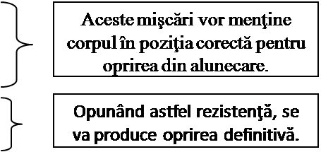
9.2. Mersul pe colţari
Însuşirea mersului pe colţari este extrem de importantă pentru deplasarea în siguranţă pe pante cu gheaţă sau zăpadă îngheţată. Tehnica mersului pe colţari necesită mult antrenament, sub directa îndrumare a unui instructor.
La fixarea colţarilor de bocanc, trebuie avut grijă ca reglajul să fie cât mai strâns pe bocanc, în caz contrar existând riscul dezechilibrării.
Tehnica mersului pe colţari includ şi folosirea pioletului, ca punct de sprijin.
Pionierul tehnicii mersului cu colţari şi piolet a fost Otto ECKENSTEIN. După numele lui a fost denumită tehnica „Eckenstein”.
Principii de bază ale tehnicii „Eckenstein” (fig.133)
1. Presiunea exercitată de colţar asupra zăpezii sau gheţii (indiferent de pantă), trebuie să fie aceiaşi în orice punct, în caz contrar existând riscul de a fi dezechilibraţi.
2. În deplasarea cu ajutorul colţarilor, indiferent de pasul folosit, ordinea mişcărilor trebuie să fie:
I. Fixarea pioletului.
II. Deplasarea unui picior.
III. Deplasarea celuilalt picior.
3. Presiunea exercitată de centrul de greutate al corpului trebuie să fie pe linia ce uneşte cei doi bocanci.
fig. 134
Tehnica „Eckenstein” în urcare
¨ Poziţia picioarelor (bocancilor)
- paralele, la o distanţă egală cu o lăţime de bazin.
- tocul bocancului îndreptat spre aval.
¨ Ordinea mişcărilor
I. Înfigerea pioletului.
II. Păşirea cu piciorul de lângă piolet.
III. Păşirea cu piciorul celălalt.
¨ Pasul se reglează în funcţie de înclinaţia pantei; cu cât înclinaţia pantei este mai mare, cu atât pasul este mai mic.
¨ La urcarea unor pante cu înclinaţie mare:
- se foloseşte priza piolet ANCORĂ.
- ordinea mişcărilor:
I. Înfigerea pioletului.
II. Păşirea cu piciorul din exterior
III.Păşirea cu celălalt picior.

Această tehnică se foloseşte, în general, pe pante cu înclinaţii de până la 40°. În acest caz, pioletul se prinde cu lopăţica în palma mâinii, degetul mare se trece pe sub piolet, astfel încât partea de sus a pioletului să fie prinsă în palma mâinii. Bucla de siguranţă se va trece peste încheietura mâinii (fig.115).


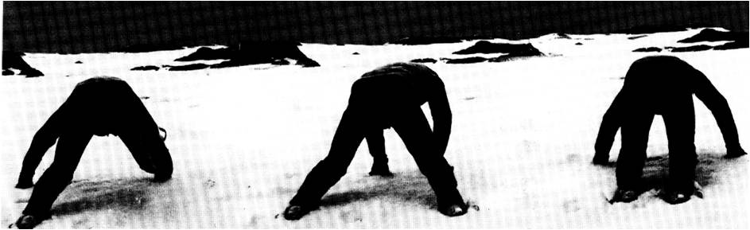
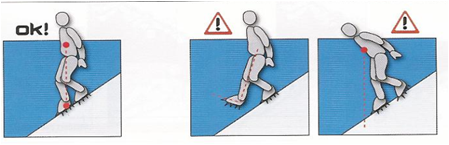
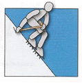
fig. 126
fig. 127
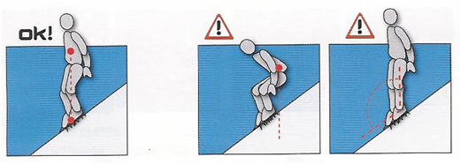
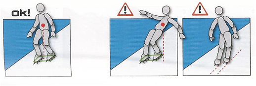
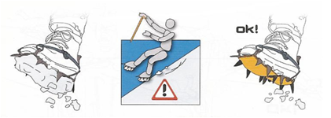
Este un procedeu foarte des folosit la coborârea unor pante cu înclinaţii de până la 50°, acoperite cu zăpadă consistentă şi relativ netedă. Salvatorul montan îşi va lăsa greutatea corpului pe tocurile bocancilor, vârfurile bocancilor vor fi cu circa 10° mai ridicate faţă de pantă iar distanţa laterală dintre bocanci va fi la o lăţime de bazin.
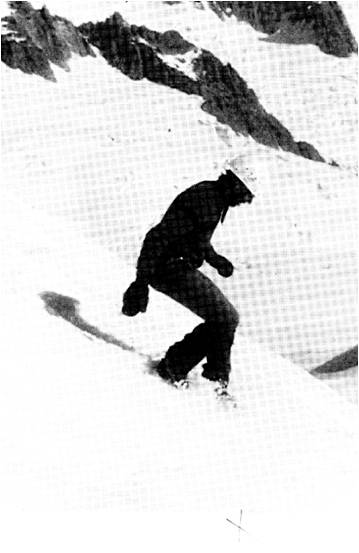
Pentru o deplasare în siguranţă pe pante acoperite cu zăpadă îngheţată, în cazul în care salvatorul montan nu posedă colţari, este necesară săparea de urme, în care să se poată păşi, cu ajutorul pioletului. Pentru săparea urmelor se foloseşte lopăţica pioletului. Adâncimea urmelor săpate, pentru siguranţă, trebuie să permită intrarea unei jumătăţi din talpa bocancului. În cazul în care lopăţica pioletului nu poate fi folosită datorită durităţii stratului de zăpadă îngheţată, se poate folosi ciocul pioletului pentru săparea urmelor.
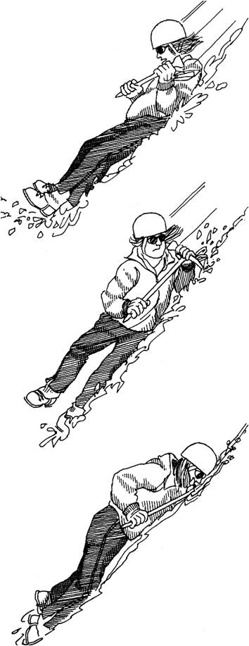
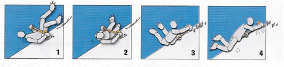
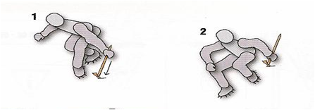


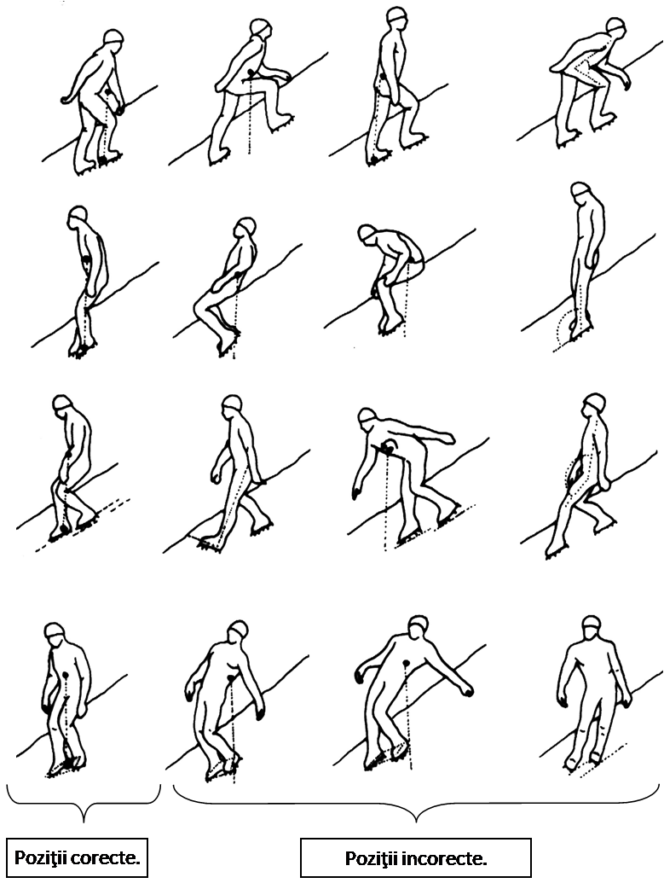
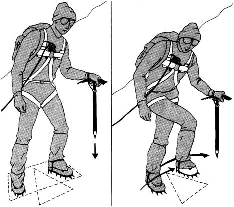
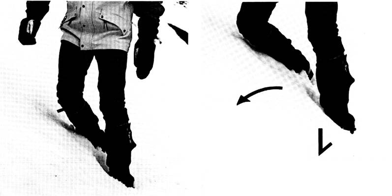
Tehnica „Eckenstein” în coborâre
¨ Poziţia picioarelor (bocancilor) (fig.135).
- distanţa dintre tocuri să fie egală cu o lăţime de bocanc.
- distanţa dintre vârfuri să fie egală cu două lăţimi de bocanc.
- în funcţie de înclinaţia pantei, lungimea pasului se modifică astfel; cu cât înclinaţia pantei creşte, cu atât pasul va fi mai mic.
¨ Ordinea mişcărilor
I. Înfigerea pioletului.
II. Păşirea cu piciorul de lângă piolet.
III. Păşirea cu piciorul celălalt.
Tehnica „Eckenstein” în urcarea pe oblic a pantelor
¨ Deplasarea se face cu pas încrucişat, în trei timpi (fig.136):
- înfigerea pioletului - a),
- păşire cu piciorul din aval peste piciorul de sprijin - b),
- păşire cu celălalt picior, prin spatele piciorului de sprijin şi pe sub piolet - c).
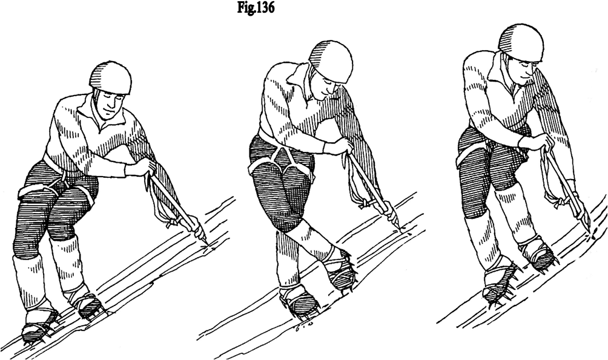
Tehnica „Cramponaj”
Tehnica „Cramponaj” este o tehnică mai nouă decât cea „Eckenstein”, apărută odată cu modernizarea colţarilor. Se foloseşte pe pante cu înclinaţii mai mari de 60° şi implică folosirea colţarilor cu minim 12 puncte (colţi), cea de-a douăsprezecea pereche de colţi fiind plasată în faţă (fig.137 – 138). La păşire, întreaga presiune se exercită pe colţii din faţă, restul fiind liberi (fig.139).
Priza piolet la tehnica „Cramponaj” este în general priza „ANCORĂ”. Se pot folosi un singur piolet (fig.140) sau doi pioleţi (fig.141).
Tehnica pioletului si mersul pe zapada
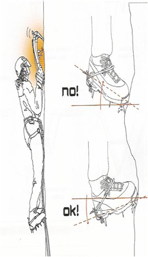